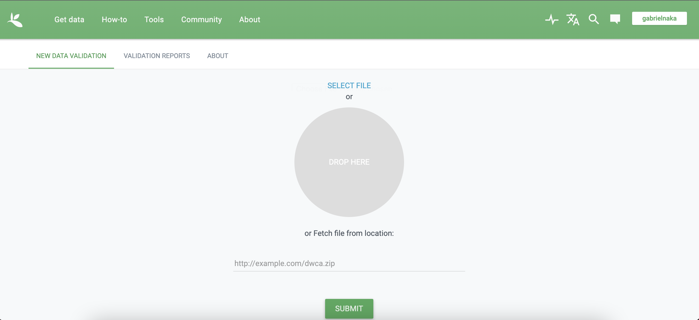

install.packages("EML")
library(EML)Dados abertos
Dados são a base de quase toda pesquisa ecológica e podem ser de natureza, formatos e tamanhos muito diferentes: tabelas, questionários, texto, imagem, áudio, entrevista, simulações, etc…
Dados são produto da pesquisa, assim como teses e artigos. Portanto, devemos nos orgulhar dos dados que produzimos/coletamos/simulamos/organizamos dentro dos nossos projetos de pequisa!
Nessa aula vamos navegar no universo dos dados ecológicos, discutindo um pouco sobre:
Porque precisamos de dados abertos, ou minimamente abertos - fraudes como fabricação/falsificação de dados
Longevidade dos dados - resgate de dados
Plano de gestão de dados
Boas práticas de organização e gestão de dados tabulares
Importância dos metadados
Vantagens em deixar dados abertos
Barreiras para o compartilhamento de dados
Princípios FAIR (Findable, Accessible, Interoperable and Reusable)
Publicação de dados em repositórios e/ou revistas científicas
Tipos de repositórios
Licenças
Ética na publicação de dados
Algumas revistas de dados
Base de dados sobre políticas de dados de revistas em Ecologia e Evolução:
- Berberi I, Roche D (2021) Living database of journal data policies in E&E. https://doi.org/10.17605/OSF.IO/D6SP3
Listas de revistas de dados (Data journals):
Algumas revistas que publicam dados ou metadados extendidos de pesquisas
Data Papers nas revistas da ESA (Ecological Society of America)
Data in Brief (da Elsevier): várias disciplinas
Scientific Data (da Springer Nature): várias disciplinas
Exemplo de data papers em ecologia: 15 artigos de dados sobre biodiversidade da Mata Altântica publicados na Ecology:
Alguns repositórios de dados
Listas de vários repositórios de dados:
Temáticos
Movebank: dados de movimento animal
KNB (Knowledge Network for Biocomplexity)
bioTIME: global database of assemblage time series for quantifying and understanding biodiversity change
[Environmental Data Initiative](+(https://edirepository.org/)
Genéricos/gerais:
Institucionais
Redes de pesquisa/pesquisadores
Alguns exemplos em ecologia de florestas quem mantém estrutura de dados compartilhados entre membros da rede (e externos mediante certas condições).
ForestGEO: dados de algumas parcelas são abertos (ex: Barro Colorado Island), outros você solicita mediante prenchimento de formulário no site, outros diretamente com os PI (principal investigators)
Buscadores/agregadores de dados
Metabuscador das instituições do estado de São Paulo.
re3data (Registry of Research data Repositories)
Construindo metadados em formato EML
Metadados
Os metadados consistem em explicações sobre a estrutura de dados. Por exemplo, o significado dos códigos ou abreviações presentes em uma data tabela, do que se trata a informação presente nas linhas e nas colunas, o que uma dada função faz. Reportar precisamente o que cada arquivo contém é de extrema importância para garantir com que outras pessoas, ou mesmo o você do futuro saiba o que foi/está sendo feito no projeto científico.
Os metadados não servem apenas para reportar o significado das variáveis em tabelas, isso por si só já seria um motivo relevante para termos metadados, mas também para facilitar a integração de bases diferentes de dados. Imagine só ter que navegar manualmente nos metadados de estudos de diferentes grupos, com dados coletados com diferentes métodos, tabelas que adotam diferentes códigos, com distantas escalas espaciais e temporais. Até seria possível, mas talvez a taxa com que perdemos espécies e habitats seja mais rápida (e está sendo) que nossa capacidade de síntese de dados. Portanto, os metadados não servem apenas para o nosso interesse próprio de organização, mas ao utilizarmos os metadados estamos contribuindo para um avanço mais rápido do processo científico.
Dada tais importâncias citadas acima, os metadados ideais devem seguir um esquema onde podem ser lidos por humanos (human-readable) e por computadores (machine-readable). Desta forma, nesta seção vamos praticar a elaboração de metadados que seguem essa característica, e que o formato foi pensado para satisfazer as especificidades dos dados ecológicos. Para tanto vamos utilizar o pacote EML.
Metadados na prática - utilizando o pacote {EML}
Vamos agora construir um metadado utilizando o pacote EML (Ecological Metadata Language). O pacote EML foi desenvolvido com o intuito de oferecer um conjunto de funções que permite a construção de metadados do tipo XML mas que abrangem as especificidades presentes nos dados ecológicos. Para relembrar a estrutura dos metadados peço que revejam os slides dessa aula aqui.
Nesta seção temos duas opções de prática. Aqueles que fizeram os metadados em palnilhas eletrônicas, podem praticar com seus próprios dados. Para aqueles que não tem dados próprios iremos utilizar o conjunto de dados do artigo “Organic-matter loading determines regime shifts and alternative states in an aquatic ecosystem” para construir um arquivo de metadados. Optamos por usar este dado pois ele já apresenta um arquivo de metadados associado, assim podemos reconstruí-lo e verificar como fica. Além disso ele é o mesmo dado utilizado no tutorial original do pacote EML, sendo conveniente para fins didáticos. Ao final vamos praticar com um outro conjunto de dados. Lembrando que se você baixou o repositório do material desta disciplina, você conseguirá ler os dados sem problemas.
Instalação
Para instalar o pacote EML faça o seguinte:
Vamos utilizar um conjunto de dados contidos no próprio pacote EML para facilitar a compreensão dos passos necessários para construir um EML completo
Construindo um EML - Harvard Forest Data
Construindo os Atributos
Os atributos são as descrições para as variáveis contidas na nossa tabela. Aquela aba contendo as informações das variáveis, pois então, esta seria os atributos da sua tabela de dados. Então, primeiro precisamos de uma tabela de atributos que define o significado geral de cada variável em nossa tabela de dados. Esta tabela pode ser gerada aqui no R direto, como no exemplo abaixo, mas pode ser importada a partir de uma tabela .csv. A tabela segue o formato a seguir:
attributes <-
tibble::tribble(
~attributeName, ~attributeDefinition, ~formatString, ~definition, ~unit, ~numberType,
"run.num", "which run number (=block). Range: 1 - 6. (integer)", NA, "which run number", NA, NA,
"year", "year, 2012", "YYYY", NA, NA, NA,
"day", "Julian day. Range: 170 - 209.", "DDD", NA, NA, NA,
"hour.min", "hour and minute of observation. Range 1 - 2400 (integer)", "hhmm", NA, NA, NA,
"i.flag", "is variable Real, Interpolated or Bad (character/factor)", NA, NA, NA, NA,
"variable", "what variable being measured in what treatment (character/factor).", NA, NA, NA, NA,
"value.i", "value of measured variable for run.num on year/day/hour.min.", NA, NA, NA, NA,
"length", "length of the species in meters (dummy example of numeric data)", NA, NA, "meter", "real")Dê uma olhada na tabela de atributos (pode ser feito usano a função View ou abrindo no Excel). A maioria dos dados seguem este formato geral.
A seguir precisamos descrever os atributos que apresentam níveis. Por exemplo o atributo chamado variable apresenta oito níveis. A estratégia seguida aqui foi criar vetores com os códigos usados para cada nível dos atributos e uma pequena explicação.
i.flag <- c(R = "real",
I = "interpolated",
B = "bad")
variable <- c(
control = "no prey added",
low = "0.125 mg prey added ml-1 d-1",
med.low = "0,25 mg prey added ml-1 d-1",
med.high = "0.5 mg prey added ml-1 d-1",
high = "1.0 mg prey added ml-1 d-1",
air.temp = "air temperature measured just above all plants (1 thermocouple)",
water.temp = "water temperature measured within each pitcher",
par = "photosynthetic active radiation (PAR) measured just above all plants (1 sensor)"
)
value.i <- c(
control = "% dissolved oxygen",
low = "% dissolved oxygen",
med.low = "% dissolved oxygen",
med.high = "% dissolved oxygen",
high = "% dissolved oxygen",
air.temp = "degrees C",
water.temp = "degrees C",
par = "micromoles m-1 s-1"
)
## Write these into the data.frame format
factors <- rbind(
data.frame(
attributeName = "i.flag",
code = names(i.flag),
definition = unname(i.flag)
),
data.frame(
attributeName = "variable",
code = names(variable),
definition = unname(variable)
),
data.frame(
attributeName = "value.i",
code = names(value.i),
definition = unname(value.i)
)
)Após especificadas as características das variáveis categóricas (as contínuas já estão especificadas na tabela geral de atributos attributes), usamos a função set_attributes para criar a lista de atributos geral dos dados, onde devemos especificar o tipo de atributo que estamos inserindo (se caracter, se data, se fator etc..)
attributeList <- set_attributes(attributes, factors, col_classes = c("character", "Date", "Date", "Date", "factor", "factor", "factor", "numeric"))Construindo as características físicas do dado
Aqui vamos especificar as características físicas do próprio arquivo de dados que utilizamos, ou seja, o formato, o tipo de compressão do arquivo, o separador etc. Resumindo, aqui é especificado a característica do arquivo. Isso é feito facilmente com a função set_physical. Se estivermos utilizando um arquivo .csv a função já extrai automaticamente a maior parte das características relevantes do arquivo de dados.
physical <- set_physical(here::here("data", "hf205-01-TPexp1-EML-Exemple.csv"))Juntando Atributos e Características físicas
Com o objeto de atributos e o objeto de características físicas temos o essencial para descrever o nosso conjunto de dados. Agora vamos juntar ambos com mais algumas informações em uma única lista e denominar isso como sendo o nosso dataTable
dataTable <- list(
entityName = "hf205-01-TPexp1.csv",
entityDescription = "tipping point experiment 1",
physical = physical,
attributeList = attributeList)Características adicionais - extensão geográfica, métodos e outros
geographicDescription <- "Harvard Forest Greenhouse, Tom Swamp Tract (Harvard Forest)"
coverage <-
set_coverage(begin = '2012-06-01', end = '2013-12-31',
sci_names = "Sarracenia purpurea",
geographicDescription = geographicDescription,
west = -122.44, east = -117.15,
north = 37.38, south = 30.00,
altitudeMin = 160, altitudeMaximum = 330,
altitudeUnits = "meter")Para descrever os métodos em metadados
methods_file <- here::here("data", "hf205-methods.docx")
methods <- set_methods(methods_file)Identificação dos indivíduos endereço e outras informações sobre contatos
R_person <- person("Aaron", "Ellison", ,"fakeaddress@email.com", "cre",
c(ORCID = "0000-0003-4151-6081"))
aaron <- as_emld(R_person)
others <- c(as.person("Benjamin Baiser"), as.person("Jennifer Sirota"))
associatedParty <- as_emld(others)
associatedParty[[1]]$role <- "Researcher"
associatedParty[[2]]$role <- "Researcher"
HF_address <- list(
deliveryPoint = "324 North Main Street",
city = "Petersham",
administrativeArea = "MA",
postalCode = "01366",
country = "USA")
publisher <- list(
organizationName = "Harvard Forest",
address = HF_address)
contact <-
list(
individualName = aaron$individualName,
electronicMailAddress = aaron$electronicMailAddress,
address = HF_address,
organizationName = "Harvard Forest",
phone = "000-000-0000")criando keywords para os dados
keywordSet <- list(
list(
keywordThesaurus = "LTER controlled vocabulary",
keyword = list("bacteria",
"carnivorous plants",
"genetics",
"thresholds")
),
list(
keywordThesaurus = "LTER core area",
keyword = list("populations", "inorganic nutrients", "disturbance")
),
list(
keywordThesaurus = "HFR default",
keyword = list("Harvard Forest", "HFR", "LTER", "USA")
))Outras informações relevantes como abstract etc
pubDate <- "2012"
title <- "Thresholds and Tipping Points in a Sarracenia
Microecosystem at Harvard Forest since 2012"
abstract <- "The primary goal of this project is to determine
experimentally the amount of lead time required to prevent a state
change. To achieve this goal, we will (1) experimentally induce state
changes in a natural aquatic ecosystem - the Sarracenia microecosystem;
(2) use proteomic analysis to identify potential indicators of states
and state changes; and (3) test whether we can forestall state changes
by experimentally intervening in the system. This work uses state-of-the
art molecular tools to identify early warning indicators in the field
of aerobic to anaerobic state changes driven by nutrient enrichment
in an aquatic ecosystem. The study tests two general hypotheses: (1)
proteomic biomarkers can function as reliable indicators of impending
state changes and may give early warning before increasing variances
and statistical flickering of monitored variables; and (2) well-timed
intervention based on proteomic biomarkers can avert future state changes
in ecological systems."
intellectualRights <- "This dataset is released to the public and may be freely
downloaded. Please keep the designated Contact person informed of any
plans to use the dataset. Consultation or collaboration with the original
investigators is strongly encouraged. Publications and data products
that make use of the dataset must include proper acknowledgement. For
more information on LTER Network data access and use policies, please
see: http://www.lternet.edu/data/netpolicy.html."Criando o arquivo XML
Agora que todas as informações foram criadas (atributos, dados físicos do arquivo, coverage, dados de contato), precisamos juntar todas elas em uma única lista.
dataset <- list(
title = title,
creator = aaron,
pubDate = pubDate,
intellectualRights = intellectualRights,
abstract = abstract,
associatedParty = associatedParty,
keywordSet = keywordSet,
coverage = coverage,
contact = contact,
methods = methods,
dataTable = dataTable)Antes de criar o arquivo XML é importante criar um uuid para o arquivo, que nada mais é que um identificador que qualquer um pode criar, como demonstrado a seguir. Para mais informações sobre o que é um uuid ver esta explicação no Wikipedia
eml <- list(
packageId = uuid::UUIDgenerate(),
system = "uuid", # type of identifier
dataset = dataset)Finalmente criando o arquivo XML e validando.
write_eml(eml, here::here("data", "eml_tutorialHF205.xml"))
eml_validate(here::here("data", "eml_tutorialHF205.xml"))Metadados para dados de biodiversidade
Se você ainda não passou pela seção de metadados usando o pacote EML, volte um pouco, por favor. Lá apresento uma introdução geral sobre metadados em XML e como montá-los usando o pacote EML no R. Aqui abordarei especificamente como montar arquivos com metadados para dados de biodiversidade (ocorrência, lista de espécies, pontos etc).
Leituras sugeridas
Esta seção é baseada no documento produzido pelo Living Norway Project, que também oferece uma introdução muito interessante sobre Darwin Core e metadados para biodiversidade.
Exemplos de metadados de biodiversidade
O melhor exemplo de esturutura digital que utiliza metadados de biodiversidade construídos desta maneira que mostrarei é o GBIF.
Metadados na prática - utilizando o pacote {LivingNorwayR}
Instalação e dados
Primeiro vamos instalar o pacote
devtools::install_github("https://github.com/LivingNorway/LivingNorwayR")
library(LivingNorwayR)Aqui os dados que serão utilizados no exemplo. Estes são os mesmos dados utilizados no tuturial do Living Norway R. Para mais detalhes visite a página deles.
Vamos utilizar um conjunto de dados que fizemos o download e está dentro da nossa pasta do curso para criar nosso arquivo Darwin Core.
# Lendo o arquivo core
TOVEEventTableDF <- read.table(here::here("data", "TOVEData", "event.txt"), sep = "\t", header = TRUE)
head(TOVEEventTableDF)Obtendo os arquivos extendidos, neste caso o arquivo de ocorrência de espécies. Podemos ver que se trata de um simples data frame onde os nomes das colunas seguem os códigos do Darwin Core
TOVEOccTable <- read.table(here::here("data", "TOVEData", "occurrence.txt"), sep = "\t", header = TRUE)
head(TOVEOccTable)Construindo um XML baseado em Darwin Core
Agora que temos nossos dados podemos construir um arquivo do tipo Darwin Core
Construindo o metadado para a tabela de eventos core
Primeiro precisamos definir o que será a tabela core e o que serão as suas extensões, que por sua vez podem ser mapeadas a partir de atributos comuns presentes em ambas as tabelas (neste caso o ID).
# 1. Inicializando automaticamente - só funciona caso os nomes já estejam de acordo com o Darwin Core
newTOVEEventTable <- initializeGBIFEvent(TOVEEventTableDF, "id", nameAutoMap = TRUE)
# 2. Iniciando manualmente - podemos usar o nome dos atributos que correspondem a cada categoria do Darwin Core.
# podemos usar o nome ou o número da coluna
newTOVEEventTable <- initializeGBIFEvent(TOVEEventTableDF, "id",
type = "type",
modified = "modified",
datasetName = "datasetName",
ownerInstitutionCode = "ownerInstitutionCode",
informationWithheld = "informationWithheld",
dataGeneralizations = "dataGeneralizations",
eventID = "eventID",
samplingProtocol = "samplingProtocol",
sampleSizeValue = "sampleSizeValue",
sampleSizeUnit = "sampleSizeUnit",
samplingEffort = "samplingEffort",
eventDate = "eventDate",
eventTime = "eventTime",
year = "year",
month = "month",
day = "day",
locationID = "locationID",
country = "country",
countryCode = "countryCode",
stateProvince = "stateProvince",
municipality = "municipality",
locality = "locality",
minimumElevationInMeters = "minimumElevationInMeters",
maximumElevationInMeters = "maximumElevationInMeters",
decimalLatitude = "decimalLatitude",
decimalLongitude = "decimalLongitude",
geodeticDatum = "geodeticDatum",
coordinateUncertaintyInMeters = "coordinateUncertaintyInMeters")
# Podemos checar se o mapeamento dos termos se deu corretamente
newTOVEEventTable$getTermMapping()Construindo os metadados para as extensões da tabela core
Neste caso a tabela a extensão que temos da tabela chave é a tabela de ocorrência de espécies. Vamos mapear ela da mesma forma que fizemos para a tabela core
# Função para inicialização da tabela
newTOVEOccTable <- initializeGBIFOccurrence(TOVEOccTable, "id", nameAutoMap = TRUE)
# Checando quais eventos foram mapeados na tabela, o que aparece com NA não foi mapeado, ou porque não existe ou porque tem o nome incorreto
newTOVEOccTable$getTermMapping()Construindo o EML
O último elemento que precisamos para construir nossos metadados para os arquivos de biodiversidade que estamos utilizando é o arquivo EML, que vocês já conhecem. O EML pode ser criado de várias formas. Vimos anteriormente como criar um EML usando o pacote {EML}. O pacote {LivingNorwayR} oferece uma maneira simples de criar um arquivo XML usando um arquivo .Rmd, ou seja, usando o Rmarkdown. Vamos entender os detalhes de um arquivo do tipo Rmd mais adiante, por hora precisamos apenas saber que ele é um arquivo que permite mesclar textos e códigos, além de possibilitar criar tags para seções (Como os títulos num documento Word). Essas tags são utilizadas pelas funções do LivingNorwayR para criar o arquivo XML. Vale notar que isso é mais limitante que criar um XML usando o EML, mas para questões didáticas vamos usar um arquivo .Rmd pronto, que está na pasta de dados deste diretório.
createdTOVEMetadata <- initializeDwCMetadata(fileLocation = here::here("data", "TOVEData", "LNWorkshopExample_Metadata.rmd"), fileType = "rmarkdown")
# Exportando o EML
createdTOVEMetadata$exportToEML(file.path(here::here("data", "TOVEData"), "newMetadata.xml"))Este novo metadado precisa ser lido para o R e assim podemos juntá-lo com os outros arquivos
newTOVEMetadata <- initializeDwCMetadata(file.path(here::here("data", "TOVEData"), "newMetadata.xml"),
fileType = "eml" # This line is not required if the file has the ".xml" file extension
)Juntando todos os arquivos
Agora temos os arquivos necessários para juntar em um único arquivo zipado que pode ser guardado localmente ou submetido em alguma plataforma de dados, por exemplo, GBIF, como ilustrado abaixo

Para juntar todos os arquivos criados precisamos usar a seguinte função
# criando um único arquivo com todos os objetos criados anteriormente
newTOVEArchive <- initializeDwCArchive(newTOVEEventTable, list(newTOVEOccTable), newTOVEMetadata)Para salvar o objeto .zip, que agora é nosso Darwin Core Archive, podemos fazer o seguinte
newTOVEArchive$exportAsDwCArchive(file.path(here::here("data", "NEWTOVEData"), "newDwCArchive.zip"))Explorando o Darwin Core Archive
Uma vez criado o arquivo no formato Darwin Core Archive podemos fazer o caminho inverso e obter as tabelas a partir do arquivo que criamos.
Para tanto podemos usar as funções do pacote LivingNorwayR para ler o arquivo zip e extrair as tabelas, incluindo os metadados.
localDataLoc2 <- file.path(here::here("data", "NEWTOVEData"), "newDwCArchive.zip")
NEWTOVEArchive <- initializeDwCArchive(localDataLoc2, "UTF-8")Podemos agora explorar os dados dentro do arquivo Darwin Core criado nos passos anteriores. Ou seja, podemos retomar os dados e importar para dentro do R para fazer, por exemplo, novas análises
# obtendo o dado
NEWTOVEEventTable <- NEWTOVEArchive$getCoreTable()
class(NEWTOVEEventTable)
# Podemos exportar como um dataframe
NEWTOVEEventTableDF <- NEWTOVEEventTable$exportAsDataFrame()
# obtendo dados da tabela extendida
NEWTOVEEventTableDF <- NEWTOVEEventTable$exportAsDataFrame()
# exportando como dataframe
head(NEWTOVEEventTableDF)Atividade
Para fixar os conceitos apresentados sobre metadados, vamos treinar um pouco mais utilizando um outro conjunto de dados.
Produza um arquivo .xml utilizando os dados iris do pacote {ggplot}. Algumas informações nós não temos, por exemplo, a cobertura de coleta, ano de coleta etc. Mas para fins de prática vamos inventar essas informações no momento de fazer o metadado.
Para acessar os dados:
library(ggplot2)
data("iris")Leituras sugeridas
Para uma introdução mais completa sobre os metadados sugiro este artigo. Para uma introdução da importância dos metadados para contruir conjuntos de dados integrados sugiro o artigo de Jones et al. (2006). Para um exemplo de base de dados online que se utiliza das potencialidades dos metadados sugiro visitar o KNB - Knowledge Network Biocomplexity.
Exemplos de metadados
Para um exemplo simples de como um metadado se parece veja aqui. Para um exemplo mais completo sugiro este arquivo. Esta introdução trazida pelo NEON (National Ecological Observatory) é muito interessante para compreender de maneira geral a importância de metadados para síntese e como eles podem ser obtidos facilmente com auxílio do pacote EML. O DataOne é uma plataforma de dados que também se utiliza dos arquivos XML para reportar as características gerais dos dados.
Leituras recomendadas
Geral
Bledsoe E, Burant J, Higino G, Roche D, Binning S, Finlay K, Pither J, Pollock L, Sunday J, Srivastava D (2021) Data rescue: saving environmental data from extinction. https://doi.org/10.32942/osf.io/ra6ze
Caetano DS, Aisenberg A (2014) Forgotten treasures: the fate of data in animal behaviour studies. Animal Behaviour 98:1–5. https://doi.org/10.1016/j.anbehav.2014.09.025
Colavizza G, Hrynaszkiewicz I, Staden I, Whitaker K, McGillivray B (2020) The citation advantage of linking publications to research data. PLOS ONE 15:e0230416. https://doi.org/10.1371/journal.pone.0230416
Culina A, Baglioni M, Crowther TW, Visser ME, Woutersen-Windhouwer S, Manghi P (2018) Navigating the unfolding open data landscape in ecology and evolution. Nat Ecol Evol 2:420–426. https://doi.org/10.1038/s41559-017-0458-2
Gomes DGE, Pottier P, Crystal-Ornelas R, et al (2022) Why don’t we share data and code? Perceived barriers and benefits to public archiving practices. Proceedings of the Royal Society B: Biological Sciences 289:20221113. https://doi.org/10.1098/rspb.2022.1113
Gurstein MB (2011) Open data: Empowering the empowered or effective data use for everyone? First Monday. https://doi.org/10.5210/fm.v16i2.3316
Lima RAF, Phillips OL, Duque A, et al (2022) Making forest data fair and open. Nat Ecol Evol 1–3. https://doi.org/10.1038/s41559-022-01738-7
McIntosh ACS, Cushing JB, Nadkarni NM, Zeman L (2007) Database design for ecologists: Composing core entities with observations. Ecological Informatics 2:224–236. https://doi.org/10.1016/j.ecoinf.2007.07.003
Mello M (2017) O que é um data paper? – Sobrevivendo na Ciência. https://marcoarmello.wordpress.com/2017/09/11/datapaper/
Perkel J (2016) Democratic databases: science on GitHub. Nature 538:127–128. https://doi.org/10.1038/538127a
Roche DG, Berberi I, Dhane F, Lauzon F, Soeharjono S, Dakin R, Binning SA (2022) Slow improvement to the archiving quality of open datasets shared by researchers in ecology and evolution. Proceedings of the Royal Society B: Biological Sciences 289:20212780. https://doi.org/10.1098/rspb.2021.2780
Roche DG, Kruuk LEB, Lanfear R, Binning SA (2015) Public Data Archiving in Ecology and Evolution: How Well Are We Doing? PLoS Biol 13:e1002295. https://doi.org/10.1371/journal.pbio.1002295
Vanz SA de S, Passos PCSJ, Caregnato SE, Pavão CMG, Borges EN, Rocha RP da, Gabriel Junior RF, Azambuja LAB (2018) Acesso aberto a dados de pesquisa no Brasil: práticas e percepções dos pesquisadores: relatório 2018. Universidade Federal do Rio Grande do Sul. https://lume.ufrgs.br/handle/10183/185195
Vines TH, Albert AYK, Andrew RL, Débarre F, Bock DG, Franklin MT, Gilbert KJ, Moore J-S, Renaut S, Rennison DJ (2014) The Availability of Research Data Declines Rapidly with Article Age. Current Biology 24:94–97. https://doi.org/10.1016/j.cub.2013.11.014
Westoby M, Falster DS, Schrader J (2021) Motivating data contributions via a distinct career currency. Proceedings of the Royal Society B: Biological Sciences 288:20202830. https://doi.org/10.1098/rspb.2020.2830
Wilkinson MD, Dumontier M, Aalbersberg IjJ, et al (2016) The FAIR Guiding Principles for scientific data management and stewardship. Sci Data 3:160018. https://doi.org/10.1038/sdata.2016.18
Global Indigenous Data Alliance (2023) CARE Principles. In: Global Indigenous Data Alliance. https://www.gida-global.org/care. Accessed 6 Aug 2023
Plano de gestão e gestão de dados
British Ecological Society (2014) A guide to data management in ecology and evolution.
Data Carpentry Data Carpentry Workshops in Ecology. In: Data Carpentry. https://datacarpentry.org/lessons/. Accessed 7 Aug 2023
Michener WK (2015) Ten Simple Rules for Creating a Good Data Management Plan. PLOS Computational Biology 11:e1004525. https://doi.org/10.1371/journal.pcbi.1004525
Strasser C, Cook R, Michener W, Budden A (2012) Primer on Data Management: What You Always Wanted to Know. https://doi.org/10.5060/D2251G48
Organização de dados
Broman KW, Woo KH (2017) Data organization in spreadsheets. The American Statistician https://doi.org/10.1080/00031305.2017.1375989
Wickham H (2014) Tidy Data. Journal o Statistical Software 59. https://www.jstatsoft.org/article/view/v059i10/v59i10.pdf
Metadados
Boettiger C, Jones M (2022) EML: Read and Write Ecological Metadata Language Files. https://docs.ropensci.org/EML/
Jones MB, Schildhauer MP, Reichman OJ, Bowers S (2006) The New Bioinformatics: Integrating Ecological Data from the Gene to the Biosphere. Annu Rev Ecol Evol Syst 37:519–544. https://doi.org/10.1146/annurev.ecolsys.37.091305.110031
Jones M, O’Brien M, Mecum B, Boettiger C, Schildhauer M, Maier M, Whiteaker T, Earl S, Chong S (2019) Ecological Metadata Language version 2.2.0. https://doi.org/10.5063/f11834t2
Lortie CJ, Vargas Poulsen C, Brun J, Kui L (2022) Tabular strategies for metadata in ecology, evolution, and the environmental sciences. Ecology and Evolution 12:e9245. https://doi.org/10.1002/ece3.9245
Video YouTube sobre conversão metadados em tabela Excel para EML (Kui Li)
Smith C (2022) EMLassemblyline: A tool kit for building EML metadata workflows. https://ediorg.github.io/EMLassemblyline/index.html
Extra
Para quem quiser saber um pouco mais sobre a importância de resgate de dados em ecologia nós sugerimos assistir este documentário produzido pela Gracielle Higino. Nele o resgate de dados é abordado de maneira sensível e acessível, destacando a importância deste processo para a ciência.